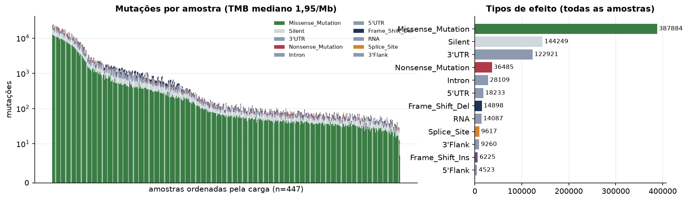
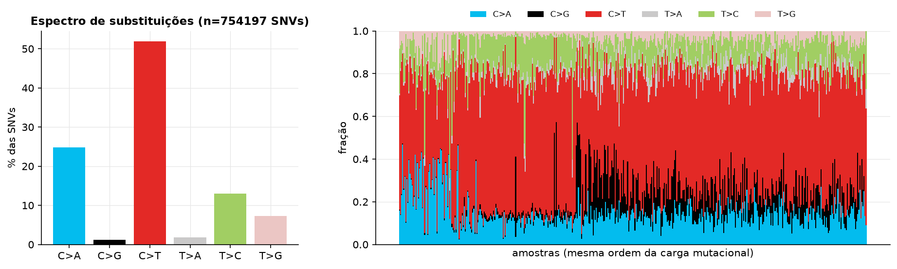
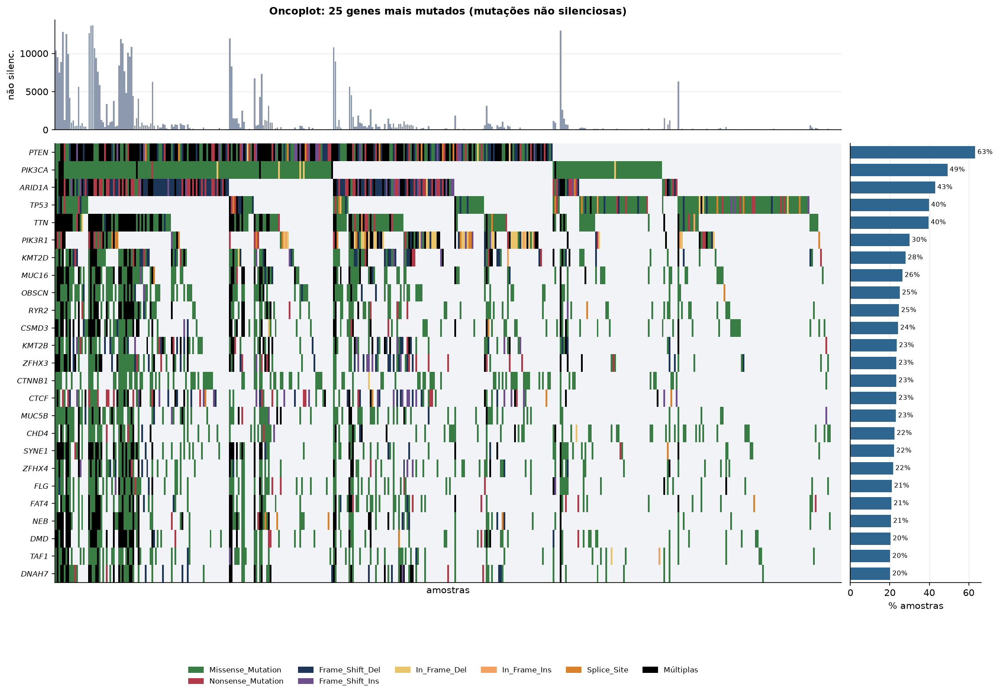
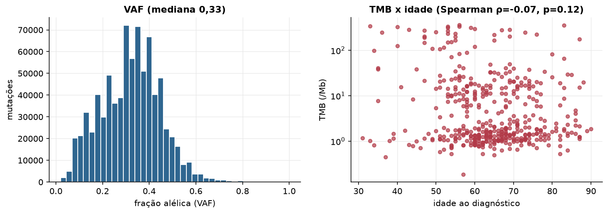

UCEC · Mutações somáticas
MC3 v0.2.8 (PanCanAtlas), exoma, chamadas consenso · gerado em 22/10/2026 05:35
447amostras sequenciadas
798.656mutações
1,95TMB mediano (/Mb)
144hipermutados (≥10/Mb)
Fonte: MC3 v0.2.8 (PanCanAtlas)
O MC3 inclui só amostras tumorais com exoma sequenciado e só mutações que passaram nos filtros de consenso. Amostras sem nenhuma mutação não aparecem no arquivo e entram aqui com carga zero quando estão na lista de amostras.
Principais resultados
- 798.656 mutações em 447 tumores, das quais 457.274 alteram proteína. A carga mutacional mediana é 1,95 mutações não silenciosas por Mb (exoma de ~38 Mb).
- 144 amostra(s) hipermutada(s) (≥ 10/Mb): TCGA-A5-A0G1-01, TCGA-A5-A0VP-01, TCGA-A5-A1OF-01, TCGA-A5-A2K3-01, TCGA-A5-A2K5-01, TCGA-A5-A2K7-01, TCGA-AJ-A23O-01, TCGA-AJ-A2QO-01.
- Genes mais mutados: PTEN (63%), PIK3CA (49%), ARID1A (43%), TP53 (40%), TTN (40%), PIK3R1 (30%), KMT2D (28%), MUC16 (26%).
- A substituição mais frequente é C>T (51,9% das SNVs). Predomínio de C>T costuma refletir desaminação de citosinas metiladas (assinatura de envelhecimento); C>A sugere tabaco ou dano oxidativo; T>C pode indicar exposições específicas.
- Correlação entre idade e TMB: ρ=-0.07 (p=0.12).
Carga mutacional

Espectro de substituições

Genes mais mutados

Genes com mais tumores mutados
| gene | amostras_mutadas | % das amostras |
|---|---|---|
| PTEN | 283 | 63.3 |
| PIK3CA | 220 | 49.2 |
| ARID1A | 192 | 43 |
| TP53 | 178 | 39.8 |
| TTN | 177 | 39.6 |
| PIK3R1 | 134 | 30 |
| KMT2D | 125 | 28 |
| MUC16 | 118 | 26.4 |
| OBSCN | 112 | 25.1 |
| RYR2 | 110 | 24.6 |
| CSMD3 | 108 | 24.2 |
| KMT2B | 105 | 23.5 |
| ZFHX3 | 104 | 23.3 |
| CTNNB1 | 104 | 23.3 |
| CTCF | 104 | 23.3 |
| MUC5B | 103 | 23 |
| CHD4 | 100 | 22.4 |
| SYNE1 | 99 | 22.1 |
| ZFHX4 | 97 | 21.7 |
| FLG | 94 | 21 |
| FAT4 | 93 | 20.8 |
| NEB | 92 | 20.6 |
| DMD | 91 | 20.4 |
| TAF1 | 90 | 20.1 |
| DNAH7 | 90 | 20.1 |
| ARHGAP35 | 89 | 19.9 |
| USH2A | 89 | 19.9 |
| FAT1 | 88 | 19.7 |
| LRP1B | 88 | 19.7 |
| AHNAK2 | 88 | 19.7 |
Fração alélica e idade
